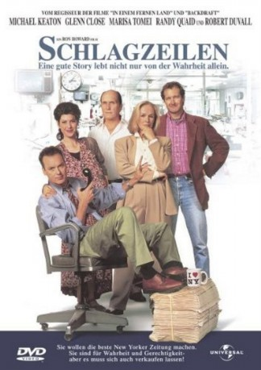

#8082 Schlagzeilen
Alternativ: The Paper
Auszeichnungen: für 1 Oscars nominiert
 
 IMDB-Wertung: 6.6 / 10
IMDB-Wertung: 6.6 / 10  Metascore: 0
Metascore: 0 
Die Tageszeitung The Sun wittert eine große Titelgeschichte als zwei Schwarze als mutmaßliche Mörder verhaftet werden. Doch Henry Hackett ahnt, dass mehr hinter dem Fall steckt und stellt auf eigene Faust Recherchen an.
Jahr: 1994
Dauer: 111 Minuten
FSK: 12
Land: USA Studio: Universal PicturesTonspuren: DD5.1 - ,
Untertitel:
Auflösung: 720p (1280x696) Größe: 6123 MB
Genre: Drama, Komödie
Regisseur:  Ron Howard
Ron Howard
Drehbuch: David Koepp
Soundtrack: Randy Newman
Darsteller:
Datei: X:\1994\Schlagzeilen (1994, FSK12, 1280x696).mkv seit 21.01.2018
Festplatte: HD 1992-1995
 Es gibt insgesamt 67 Filme in der Gruppe '1994'
Es gibt insgesamt 67 Filme in der Gruppe '1994'